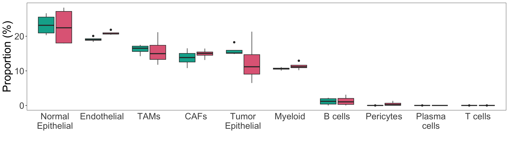
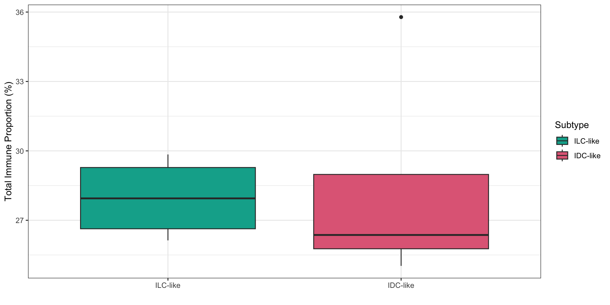

Last updated: 2023-08-01
Checks: 5 1
Knit directory: WenjunLiu_Thesis_Chapter4/
This reproducible R Markdown analysis was created with workflowr (version 1.7.0). The Checks tab describes the reproducibility checks that were applied when the results were created. The Past versions tab lists the development history.
Great job! The global environment was empty. Objects defined in the global environment can affect the analysis in your R Markdown file in unknown ways. For reproduciblity it’s best to always run the code in an empty environment.
The command set.seed(20200930) was run prior to running
the code in the R Markdown file. Setting a seed ensures that any results
that rely on randomness, e.g. subsampling or permutations, are
reproducible.
Great job! Recording the operating system, R version, and package versions is critical for reproducibility.
Nice! There were no cached chunks for this analysis, so you can be confident that you successfully produced the results during this run.
Great job! Using relative paths to the files within your workflowr project makes it easier to run your code on other machines.
Tracking code development and connecting the code version to the
results is critical for reproducibility. To start using Git, open the
Terminal and type git init in your project directory.
This project is not being versioned with Git. To obtain the full
reproducibility benefits of using workflowr, please see
?wflow_start.
library(tidyverse)
library(yaml)
library(scales)
library(pander)
library(glue)
library(edgeR)
library(AnnotationHub)
library(ensembldb)
library(cowplot)
library(ggfortify)
library(magrittr)
library(cqn)
library(ggrepel)
library(DT)
library(celldex)
library(dtangle)
# library(loomR)
library(Seurat)
library(Matrix)
library(corrplot)
# library(MuSiC)
library(plotly)
library(colorspace)
library(ggpubr)
library(randomcoloR)
library(ggforce)
library(pheatmap)
source(here::here("analysis/smallFunctions/DWLS_funs.R"))panderOptions("table.split.table", Inf)
panderOptions("big.mark", ",")
theme_set(theme_bw())config <- here::here("config/config.yml") %>%
read_yaml()
suffix <- paste0(config$tag)
sp <- config$ref$species %>%
str_replace("(^[a-z])[a-z]*_([a-z]+)", "\\1\\2") %>%
str_to_title()ah <- AnnotationHub() %>%
subset(rdataclass == "EnsDb") %>%
subset(str_detect(description, as.character(config$ref$release))) %>%
subset(genome == config$ref$build)
stopifnot(length(ah) == 1)ensDb <- ah[[1]]
genesGR <- read_rds(here::here("output/genesGR.rds"))Sample metadata and merged counts were read in and filtered as in the
dge_analysis.Rmd. DGElists were formed for normal and tumor samples and
cqn was applied for biases introduced by systematic
artefacts.
init_cellType <- read_delim(here::here("config/sample_meta.txt"), delim = "\t")
init_cellType <- init_cellType %>%
mutate(Stroma = ifelse(str_detect(Dominant_cell_type, regex("Stroma", ignore_case = T)), TRUE, FALSE),
Epithelial = ifelse(str_detect(Dominant_cell_type, regex("Epithelial", ignore_case = T)), TRUE, FALSE),
Ducts = ifelse(str_detect(Dominant_cell_type, regex("ducts", ignore_case = T)), TRUE, FALSE),
Fat = ifelse(str_detect(Dominant_cell_type, regex("fat", ignore_case = T)), TRUE, FALSE),
patient = str_replace(patient, "TH", "TH-")) %>%
pivot_longer(c("Stroma", "Epithelial", "Ducts", "Fat"),
names_to = "cell_type",
values_to = "TF") %>%
mutate(cell_type = ifelse(TF, cell_type, NA)) %>%
dplyr::select(-c("TF", "Dominant_cell_type")) %>%
.[!is.na(.$cell_type),] %>%
chop("cell_type") %>%
mutate(cell_type = vapply(.$cell_type, function(x){
paste(x,collapse = ";")
}, character(1)))samples <- config$samples %>%
here::here() %>%
read_tsv() %>%
left_join(init_cellType) %>%
mutate(
Filename = paste0(sample, ".r_1"),
condition = ifelse(Tumor,
paste("Tumor", treat, sep = "_"),
paste("Normal", treat, sep = "_")),
patient = vapply(.$patient, function(x){str_split(x, "-")[[1]][2]}, character(1)),
patient = ifelse(Tumor,
paste("Tumor", patient, sep = "-"),
paste("Normal",patient, sep = "-")),
desc = paste(patient, treat, sep = " ")
) %>%
dplyr::select(-c("name", "sample")) %>%
dplyr::rename(name = desc) %>%
mutate_if(
function(x){length(unique(x)) < length(x)},
as.factor
) %>%
mutate(
treat = relevel(treat, ref = "Veh")
)mergedSamples <- samples %>%
group_by(name, patient, treat, Tumor, cell_type, Tissue_type, Age, Diagnosis) %>%
tally()
tumor_sample <- mergedSamples %>%
dplyr::filter(Tumor == TRUE) %>%
droplevels()Tumour samples were classified into a IDC-like and a ILC-like group bassing on the analysis in ILC/IDC classification:
tumor_sample <- tumor_sample %>%
dplyr::mutate(
Diagnosis = ifelse(
str_detect(Diagnosis, "invasive"),
"ILC-like", "IDC-like"
),
Diagnosis = ifelse(
patient == "Tumor-8",
"IDC-like",
Diagnosis
),
Diagnosis = as.factor(Diagnosis)
)tumor_sample %>%
ungroup() %>%
dplyr::select(patient, Diagnosis) %>%
unique() %>%
pander()| patient | Diagnosis |
|---|---|
| Tumor-1 | ILC-like |
| Tumor-2 | IDC-like |
| Tumor-3 | IDC-like |
| Tumor-4 | ILC-like |
| Tumor-5 | IDC-like |
| Tumor-6 | ILC-like |
| Tumor-7 | ILC-like |
| Tumor-8 | IDC-like |
treat_cols <- c(
Veh = rgb(0.7, 0.7, 0.7),
DHT = rgb(0.8, 0.2, 0.2),
E2 = rgb(0.2, 0.2, 0.8),
`E2+DHT` = rgb(1, 0.4, 1)
)
tumor_cols <- hcl.colors(
n = length(unique(samples$Tumor)),
palette = "Zissou 1"
) %>%
setNames(unique(samples$Tumor))
patient_cols <- hcl.colors(
n = length(levels(mergedSamples$patient)),
palette = "Spectral"
) %>%
setNames(levels(mergedSamples$patient))
diag_cols <- readRDS("~/GSE800098/output/diag_cols.rds")treat_shapes <- c(
Veh = 1,
DHT = 19,
E2 = 15,
`E2+DHT` = 17
)# counts <- here::here("data/aligned/counts/counts.out.gz") %>%
# gzfile() %>%
# read_tsv(comment = "#") %>%
# dplyr::select(Geneid, ends_with("bam")) %>%
# rename_at(vars(ends_with("bam")), dirname) %>%
# rename_all(basename) %>%
# column_to_rownames("Geneid")# mergedCounts <- counts %>%
# rownames_to_column("gene_id") %>%
# pivot_longer(
# cols = -gene_id,
# names_to = "Filename",
# values_to = "counts"
# ) %>%
# left_join(samples, by = "Filename") %>%
# group_by(
# gene_id, name, patient, treat, Tumor) %>%
# summarise(counts = sum(counts), .groups = "drop") %>%
# pivot_wider(
# id_cols = gene_id,
# values_from = counts,
# names_from = name
# ) %>%
# column_to_rownames("gene_id")
# saveRDS(mergedCounts, here::here("data/mergedCounts.rds"))
mergedCounts <- readRDS(here::here("data/mergedCounts.rds")) used (Mb) gc trigger (Mb) limit (Mb) max used (Mb)
Ncells 12419681 663.3 22151544 1183.1 NA 20207713 1079.3
Vcells 28890979 220.5 46391808 354.0 204800 38538054 294.1The filtered and normalised DGEList was loaded in.
dge_tumor <- readRDS(here::here("output/dge_tumor.rds"))cqNorma_tumor <- with(
dge_tumor,
cqn(
counts= counts,
x = genes$gc_content,
lengths = genes$ave_tx_len
)
)
dge_tumor$offset <- cqNorma_tumor$glm.offset
logCPM_tumor <- cqNorma_tumor$y + cqNorma_tumor$offsetpcaPost_tumor <- logCPM_tumor %>%
t() %>%
prcomp() Annotaed scRNA-seq data was retrieved from R code and downstream analysis objects for the scRNA-seq atlas of normal and tumorigenic human breast tissue.
Firstly, two separate Seruat objects, both containing
total cells were downloaded, one from 13 reduction mammoplasty tissues
(8 pre-menopausal & 3 post-menopausal), and the other one from 13
naive ER+ tumor..
Information about each tissue, including if total or only epithelial
cells were sequenced, the condition, diagnosis (only for ER+ tummor),
gender, menopausal status, and age was read in as a
data.frame.
The full tissue metadata table is displayed below:
Seruat_ERTotal <- readRDS(here::here("data/scRNA_ref/WEHI/SeuratObject_ERTotal.rds"))
Seruat_NormTotal <- readRDS(here::here("data/scRNA_ref/WEHI/SeuratObject_NormTotal.rds"))
tissueInfo <- readxl::read_xlsx(here::here("data/scRNA_ref/WEHI/sampleInfo.xlsx"), sheet = 1) %>%
mutate(
Specimen_ID = vapply(.$`Sample Name`, function(x){
str_remove_all(x, "-epi|-total")
}, character(1))
) %>%
dplyr::select(-`Sample Name`) %>%
left_join(read_table(here::here("data/scRNA_ref/WEHI/patientAge.txt"))) %>%
relocate(
Specimen_ID, .before = Patient
)tissueInfo %>%
mutate_if(is.character, as.factor) %>%
datatable(
filter = "top",
caption = htmltools::tags$caption(
htmltools::em(
"Tissue metadata of all 69 breast tissue sequenced in Pal(2021)SingleCellRNA")
)
)Seruat_ERsub <- readRDS(here::here("data/scRNA_ref/WEHI/SeuratObject_ERTotalSub.rds"))
Seruat_Normsub <- readRDS(here::here("data/scRNA_ref/WEHI/SeuratObject_NormTotalSub.rds"))Among normal tissues, 8 clusters were identified, cluster 1, 3, 4
were identified to be epithelial cell through ECPAM expression, where
cluster 4 was mature luminal (ML), cluster 1 was luminal progenitor and
cluster 3 was basal cells. The other EPCAM-negative non-epithelial cells
were then reclustered to study the tumor microenvironment, where 7
sub-clusters were identified. Seurat object for the
non-epithelail cells subclustering result was also readed in.
Visualisations of the two-step clustering results and the cluster
annotation can be found in
this figure. Note: when the non-epithelial cells were reclusterd, a
really small subset of cells (rnrow(Seruat_Normsub@meta.data %>%
dplyr::filter(seurat_clusters == 5))` cells) were also labelled as
Epithelial cells. For simplicity, those cells were excluded and not used
in the reference dataset for deconvolution.
Among ER+ tumor cells, 11 clusters were identified, where 1,5,6 and 7 were defined to be epithalial cells. Out of those four epithelial clusters, cluster 1 and 5 were defined to be tumor epithelial cells by inferring CNB, and 6 and 7 were defined to be normal epithelial. The non-epithelial cells were also reclustered into 13 subcluster and annotated. Visualisations for this part of the analysis are: Figure 6 and Figure 7.
The Seruat object contained which cluster cells were
assigned to but not the cluster annotation. So I manually put the
annotations in.
Seruat_NormTotal@meta.data <- Seruat_NormTotal@meta.data %>%
mutate(
seurat_clusters = as.numeric(as.character(seurat_clusters)) +1,
cell_type = ifelse(seurat_clusters %in% c(1, 3, 4), "Epithelial", "Non-Epithelial")
) %>%
rownames_to_column("cell_id")
Seruat_Normsub@meta.data <- Seruat_Normsub@meta.data %>%
mutate(
seurat_clusters = as.numeric(as.character(seurat_clusters)) +1L
) %>%
rownames_to_column("cell_id") %>%
left_join(
data_frame(
seurat_clusters = c(1:7),
cell_type = c(
"Fibroblasts", "Endothelial_vasc", "Pericytes", "Myeloid",
"Lymphoid", "Epi", "Endothelial_lymph"
)
)
) %>%
dplyr::filter(seurat_clusters != 6)
Seruat_ERTotal@meta.data <- Seruat_ERTotal@meta.data %>%
mutate(
seurat_clusters = as.numeric(as.character(seurat_clusters)) +1,
cell_type = case_when(
seurat_clusters %in% c(1,5) ~ "Tumor_Epithelial",
seurat_clusters %in% c(6,7) ~ "Normal_Epithelial",
!seurat_clusters %in% c(1,5,6,7) ~ "Non-Epithelial")
) %>%
rownames_to_column("cell_id")
Seruat_ERsub@meta.data <- Seruat_ERsub@meta.data %>%
mutate(
seurat_clusters = as.numeric(as.character(seurat_clusters)) +1L
) %>%
rownames_to_column("cell_id") %>%
left_join(
data_frame(
seurat_clusters = c(1:13),
cell_type = c(
"T cells", "TAMs", "CAFs", "Pericytes", NA, "Endothelial", "TAMs",
"B cells", "Myeloid", "CAFs", "Plasma cells", NA, NA
)
)
)# rm(Seruat_ERsub,
# Seruat_ERTotal,
# Seruat_Normsub,
# Seruat_NormTotal)Since the full scRNA-seq data contains too many cells and is too big to handle on my local machine, I randomly sampled 10% of each cell type to form the reference datasets for deconvolution for both the ER+ tumor and the normal tissues.
# set.seed(123)
# normalCell_meta <- Seruat_NormTotal@meta.data %>%
# dplyr::filter(cell_type == "Epithelial") %>%
# sample_frac(0.1) %>%
# rbind(
# Seruat_Normsub@meta.data %>%
# group_by(cell_type) %>%
# sample_frac(0.1)
# )
# normalCell_mat <- GetAssayData(Seruat_NormTotal, slot = 'data') %>%
# .[ ,colnames(.) %in% normalCell_meta$cell_id] %>%
# .[,match(normalCell_meta$cell_id, colnames(.))] %>%
# as.matrix()
# saveRDS(normalCell_mat, here::here("data/scRNA_ref/WEHI/normalCell_mat.rds"))
# saveRDS(normalCell_meta, here::here("data/scRNA_ref/WEHI/normalCell_meta.rds"))
normalCell_mat <- readRDS(here::here("data/scRNA_ref/WEHI/normalCell_mat.rds"))
normalCell_meta <- readRDS(here::here("data/scRNA_ref/WEHI/normalCell_meta.rds"))# set.seed(123)
# ERCell_meta <- Seruat_ERTotal@meta.data %>%
# dplyr::filter(cell_type %in% c("Tumor_Epithelial", "Normal_Epithelial")) %>%
# sample_frac(0.1) %>%
# rbind(
# Seruat_ERsub@meta.data %>%
# drop_na() %>%
# group_by(cell_type) %>%
# sample_frac(0.1)
# )
# temp <- GetAssayData(Seruat_ERTotal, slot = 'data') %>%
# .[ ,colnames(.) %in% ERCell_meta$cell_id] %>%
# .[,match(ERCell_meta$cell_id, colnames(.))] %>%
# as.matrix()
# saveRDS(temp, here::here("data/scRNA_ref/WEHI/ERCell_mat.rds"))
# saveRDS(ERCell_meta, here::here("data/scRNA_ref/WEHI/ERCell_meta.rds"))
ERCell_mat <- readRDS(here::here("data/scRNA_ref/WEHI/ERCell_mat.rds"))
ERCell_meta <- readRDS(here::here("data/scRNA_ref/WEHI/ERCell_meta.rds"))rm(Seruat_ERsub,
Seruat_ERTotal,
Seruat_Normsub,
Seruat_NormTotal)cell_cols_tot <- hcl.colors(
n = length(unique(normalCell_meta$cell_type)),
palette = "Zissou 1") %>%
setNames(unique(normalCell_meta$cell_type) %>%
str_replace_all("_", " "))
cell_cols_ER <- distinctColorPalette(length(unique(ERCell_meta$cell_type))) %>%
setNames(unique(ERCell_meta$cell_type) %>%
str_replace_all("_", " "))In DWLS, gene signatures of each cell type are firstly determined through differential expression analysis, which could be undertaken using either Seurat or MAST. Mean of expressions of those signatures detected across cells assigned to be the same cell type will be taken and those mean expressions are used to model the bulk RNA-seq expression through a weighted least square approach.
DWLS offers two options for the signature gene
selection, one using MAST while the other one uses Seruat. The MAST
options requires the raw scRNA-seq count as input, which was what was available in the Garvan dataset. But in
this study, only the log-transformed and scaled data were provided with
the Seruat object, so the
buildSignatureMatrixUsingSeurat option was chosen
instead.
mapID_test <- mapIds(ensDb, keys = rownames(logCPM_tumor), column = "GENENAME", keytype = "GENEID") %>%
.[!is.na(.)]
index_test <- pmatch(rownames(logCPM_tumor), names(mapID_test))
logCPM_tumor_n <- logCPM_tumor
rownames(logCPM_tumor_n) <- mapID_test[index_test]
logCPM_tumor_n <- logCPM_tumor_n[!is.na(rownames(logCPM_tumor_n)), ]
# saveRDS(logCPM_tumor_n, here::here("data/scRNA_ref/garvan/logCPM_tumor_n.rds"))#replace the spaec in cell type annotatoin to avoid error in DWLS
ERCell_meta <- ERCell_meta %>%
mutate(
cell_type = str_replace(cell_type, " ", "_")
) # result <- here::here("output/DWLS/WEHI_ER/signature")
# Sig_tumor <- buildSignatureMatrixUsingSeurat(scdata = ERCell_mat,
# id = ERCell_meta$cell_type,
# path= result,
# diff.cutoff=0.5,
# pval.cutoff=0.01)
# tr_tumor <- sapply(colnames(logCPM_tumor_n), function(x){
# logCPM_tumor_n[,x] %>%
# set_names(rownames(logCPM_tumor_n)) %>%
# trimData(Sig_tumor, .)
# }, simplify = FALSE)
# solDWLS_tumor <- sapply(colnames(logCPM_tumor_n), function(x){
# solveDampenedWLS(tr_tumor[[x]]$sig, tr_tumor[[x]]$bulk)
# }, simplify = FALSE)
# write_rds(solDWLS_tumor,
# here::here(
# "output/DWLS/WEHI_ER/results_tumor.rds"
# ))solDWLS_tumor <- readRDS(here::here("output/DWLS/WEHI_ER/results_tumor.rds"))
solDWLS_tumor %>%
bind_rows() %>%
mutate(Sample = names(solDWLS_tumor) ) %>%
pivot_longer(col = -"Sample",
names_to = "Cell Type", values_to = "Proportion") %>%
mutate(treatment = vapply(.$Sample,
function(x){str_split(x, " ")[[1]][2]}, character(1)),
patient = vapply(.$Sample,
function(x){str_split(x, " ")[[1]][1]}, character(1)),
`Cell Type` = str_replace_all(`Cell Type`, "_", " ")) %>%
ggplot(aes(x = Proportion, y= treatment,
fill = factor(`Cell Type`, levels = rev(c("Tumor Epithelial","Normal Epithelial","B cells", "T cells",
"Endothelial","CAFs", "TAMs", "Myeloid", "Pericytes","Plasma cells"))))) +
geom_bar(position="stack", stat="identity") +
facet_wrap(~patient) +
scale_fill_manual(values = cell_cols_ER,
limits = force,
name = "Cell Type")Cell type proportion estimated derived from DWLS for each tumor samples. Epithelial cell was the dominating cell type in all samples. Overall, more normal epithelials than cancer epithelial cells were detected.
WEHI_tumor <- solDWLS_tumor %>%
bind_rows() %>%
mutate(name = names(solDWLS_tumor)
# ,
# Myeloid = Myeloid + TAMs
) %>%
# dplyr::select(-TAMs) %>%
pivot_longer(col = -"name",
names_to = "Cell Type", values_to = "WEHI_Prop") Differences in the predicted cell type proportions between the two groups of treatment-naive tumours: IDC-like and ILC-like tumours were visualised.
new_diag_col <- qualitative_hcl(2, palette = "Dark 3") %>%
set_names(c("IDC-like", "ILC-like"))
temp <- WEHI_tumor %>%
left_join(tumor_sample %>%
ungroup() %>%
dplyr::select(name,
Treatment = treat, Age, Diagnosis, patient)) %>%
mutate(
`Cell Type` = str_replace_all(`Cell Type`, "_", " "),
`Cell Type` = as.factor(`Cell Type`)) %>%
dplyr::filter(Treatment == "Veh") %>%
group_by(`Cell Type`) %>%
mutate(ave = mean(WEHI_Prop)) %>%
ungroup()
cellOrder <- temp %>%
dplyr::select(`Cell Type`, ave) %>%
unique() %>%
arrange(desc(ave)) %>%
pull(`Cell Type`)
# stat <- temp %>%
# split(f = .$`Cell Type`) %>%
# lapply(dplyr::select, Diagnosis, WEHI_Prop, name) %>%
# lapply(pivot_wider, names_from = Diagnosis, values_from = WEHI_Prop) %>%
# lapply(function(x){
# t.test(
# x$`ILC-like`, x$`IDC-like`)$p.value
# })
sup2a <- temp %>%
mutate(WEHI_Prop = WEHI_Prop*100) %>%
ggplot(
aes(
factor(`Cell Type`, levels = cellOrder),
WEHI_Prop, fill = Diagnosis)
) +
geom_boxplot(
) +
scale_fill_manual(values = new_diag_col,
name = "Subtype") +
scale_x_discrete(labels = function(x) str_wrap(x, width = 10)) +
theme(
axis.ticks.x = element_blank(),
panel.grid = element_blank(),
text = element_text(size = 22),
legend.position = "none") +
labs(
# x = "Cell Type",
x = "",
y = "Proportion (%)"
)
sup2a
T-tests were performed with each cell type to compare the mean predicted cell type proportions between the two treatment groups. Only endothelial cell had a raw p-value that is smaller than 0.05.
temp %>%
split(f = .$`Cell Type`) %>%
lapply(dplyr::select, Diagnosis, WEHI_Prop, name) %>%
lapply(pivot_wider, names_from = Diagnosis, values_from = WEHI_Prop) %>%
lapply(function(x){
t.test(
x$`ILC-like`, x$`IDC-like`)$p.value
}) %>%
unlist() %>%
enframe(
name = "Cell Type",
value = "p-value"
) %>%
pander()| Cell Type | p-value |
|---|---|
| B cells | 0.8696 |
| CAFs | 0.4381 |
| Endothelial | 0.0092 |
| Myeloid | 0.2858 |
| Normal Epithelial | 0.8707 |
| Pericytes | 0.246 |
| Plasma cells | 0.2455 |
| T cells | 0.6207 |
| TAMs | 0.8332 |
| Tumor Epithelial | 0.3788 |
library(ggpubr)
total_immune <- solDWLS_tumor %>%
bind_rows() %>%
mutate(
name = names(solDWLS_tumor),
total_immune = (B_cells + Myeloid + T_cells + TAMs)*100) %>%
dplyr::select(name, total_immune) %>%
left_join(tumor_sample %>%
ungroup() %>%
dplyr::select(name, treat, Diagnosis)) %>%
dplyr::filter(treat == "Veh")
temp <- total_immune %>%
dplyr::select(-treat) %>%
pivot_wider(names_from = "Diagnosis", values_from = "total_immune")
immune_stat <- t.test(temp$`ILC-like`, temp$`IDC-like`)$p.valueThe total predicted immune proportion was derived by summing the predicted proportions of B cells, myeloid, T cells and TAMs within each sample. The difference in mean immune proportions between the two tumour groups is not statistically significant (p-value = 0.8825345).
sup2b <- total_immune %>%
ggplot(
aes(Diagnosis, total_immune, fill = Diagnosis)
) +
geom_boxplot() +
scale_fill_manual(values = new_diag_col,
name = "Subtype") +
labs(
# x = "Cell Type",
x = "",
y = "Total Immune Proportion (%)"
)
sup2b
Code used to generate figures for the thesis.
# sup2 <- (sup2a | sup2b) +
# plot_annotation(tag_levels = "A") +
# plot_layout(
# widths = c(0.8, 0.2),
# guides = "collect"
# ) &
# theme(
# plot.tag = element_text(size = 26, face = "bold" ),
# text = element_text(size = 24)
# )
# # png(
# # "/Users/wenjunliu/PhD_thesis/Images/chapter_04/deconvolute.png",
# # width = 500, height =150, units='mm', res = 300
# # )
# # sup2
# # dev.off()
sessionInfo()R version 4.3.0 (2023-04-21)
Platform: x86_64-apple-darwin20 (64-bit)
Running under: macOS Ventura 13.3.1
Matrix products: default
BLAS: /Library/Frameworks/R.framework/Versions/4.3-x86_64/Resources/lib/libRblas.0.dylib
LAPACK: /Library/Frameworks/R.framework/Versions/4.3-x86_64/Resources/lib/libRlapack.dylib; LAPACK version 3.11.0
locale:
[1] en_US.UTF-8/en_US.UTF-8/en_US.UTF-8/C/en_US.UTF-8/en_US.UTF-8
time zone: Australia/Adelaide
tzcode source: internal
attached base packages:
[1] splines stats4 stats graphics grDevices utils datasets
[8] methods base
other attached packages:
[1] MAST_1.26.0 SingleCellExperiment_1.22.0
[3] varhandle_2.0.5 ROCR_1.0-11
[5] e1071_1.7-13 reshape_0.8.9
[7] quadprog_1.5-8 pheatmap_1.0.12
[9] ggforce_0.4.1 randomcoloR_1.1.0.1
[11] ggpubr_0.6.0 colorspace_2.1-0
[13] plotly_4.10.2 corrplot_0.92
[15] Matrix_1.6-0 SeuratObject_4.1.3
[17] Seurat_4.3.0.1 dtangle_2.0.9
[19] celldex_1.10.1 SummarizedExperiment_1.30.2
[21] MatrixGenerics_1.12.2 matrixStats_1.0.0
[23] DT_0.28 ggrepel_0.9.3
[25] cqn_1.46.0 quantreg_5.95
[27] SparseM_1.81 preprocessCore_1.62.1
[29] nor1mix_1.3-0 mclust_6.0.0
[31] magrittr_2.0.3 ggfortify_0.4.16
[33] cowplot_1.1.1 ensembldb_2.24.0
[35] AnnotationFilter_1.24.0 GenomicFeatures_1.52.1
[37] AnnotationDbi_1.62.2 Biobase_2.60.0
[39] GenomicRanges_1.52.0 GenomeInfoDb_1.36.1
[41] IRanges_2.34.1 S4Vectors_0.38.1
[43] AnnotationHub_3.8.0 BiocFileCache_2.8.0
[45] dbplyr_2.3.3 BiocGenerics_0.46.0
[47] edgeR_3.42.4 limma_3.56.2
[49] glue_1.6.2 pander_0.6.5
[51] scales_1.2.1 yaml_2.3.7
[53] lubridate_1.9.2 forcats_1.0.0
[55] stringr_1.5.0 dplyr_1.1.2
[57] purrr_1.0.1 readr_2.1.4
[59] tidyr_1.3.0 tibble_3.2.1
[61] ggplot2_3.4.2 tidyverse_2.0.0
loaded via a namespace (and not attached):
[1] fs_1.6.2 ProtGenerics_1.32.0
[3] spatstat.sparse_3.0-2 bitops_1.0-7
[5] httr_1.4.6 RColorBrewer_1.1-3
[7] backports_1.4.1 tools_4.3.0
[9] sctransform_0.3.5 utf8_1.2.3
[11] R6_2.5.1 lazyeval_0.2.2
[13] uwot_0.1.16 withr_2.5.0
[15] sp_2.0-0 prettyunits_1.1.1
[17] gridExtra_2.3 progressr_0.13.0
[19] cli_3.6.1 spatstat.explore_3.2-1
[21] labeling_0.4.2 sass_0.4.6
[23] spatstat.data_3.0-1 proxy_0.4-27
[25] ggridges_0.5.4 pbapply_1.7-2
[27] Rsamtools_2.16.0 parallelly_1.36.0
[29] readxl_1.4.3 rstudioapi_0.15.0
[31] RSQLite_2.3.1 generics_0.1.3
[33] BiocIO_1.10.0 crosstalk_1.2.0
[35] vroom_1.6.3 ica_1.0-3
[37] spatstat.random_3.1-5 car_3.1-2
[39] fansi_1.0.4 abind_1.4-5
[41] lifecycle_1.0.3 carData_3.0-5
[43] Rtsne_0.16 grid_4.3.0
[45] blob_1.2.4 promises_1.2.0.1
[47] ExperimentHub_2.8.0 crayon_1.5.2
[49] miniUI_0.1.1.1 lattice_0.21-8
[51] KEGGREST_1.40.0 pillar_1.9.0
[53] knitr_1.43 rjson_0.2.21
[55] future.apply_1.11.0 codetools_0.2-19
[57] leiden_0.4.3 V8_4.3.2
[59] data.table_1.14.8 vctrs_0.6.3
[61] png_0.1-8 cellranger_1.1.0
[63] gtable_0.3.3 cachem_1.0.8
[65] xfun_0.39 S4Arrays_1.0.4
[67] mime_0.12 survival_3.5-5
[69] interactiveDisplayBase_1.38.0 ellipsis_0.3.2
[71] fitdistrplus_1.1-11 nlme_3.1-162
[73] bit64_4.0.5 progress_1.2.2
[75] filelock_1.0.2 RcppAnnoy_0.0.21
[77] rprojroot_2.0.3 bslib_0.5.0
[79] irlba_2.3.5.1 KernSmooth_2.23-21
[81] DBI_1.1.3 tidyselect_1.2.0
[83] bit_4.0.5 compiler_4.3.0
[85] curl_5.0.1 git2r_0.32.0
[87] xml2_1.3.5 DelayedArray_0.26.6
[89] rtracklayer_1.60.0 lmtest_0.9-40
[91] rappdirs_0.3.3 digest_0.6.33
[93] goftest_1.2-3 spatstat.utils_3.0-3
[95] rmarkdown_2.23 XVector_0.40.0
[97] htmltools_0.5.5 pkgconfig_2.0.3
[99] sparseMatrixStats_1.12.2 highr_0.10
[101] fastmap_1.1.1 rlang_1.1.1
[103] htmlwidgets_1.6.2 shiny_1.7.4.1
[105] DelayedMatrixStats_1.22.1 farver_2.1.1
[107] jquerylib_0.1.4 zoo_1.8-12
[109] jsonlite_1.8.7 BiocParallel_1.34.2
[111] RCurl_1.98-1.12 GenomeInfoDbData_1.2.10
[113] patchwork_1.1.2 munsell_0.5.0
[115] Rcpp_1.0.11 reticulate_1.30
[117] stringi_1.7.12 zlibbioc_1.46.0
[119] MASS_7.3-60 plyr_1.8.8
[121] parallel_4.3.0 listenv_0.9.0
[123] deldir_1.0-9 Biostrings_2.68.1
[125] tensor_1.5 hms_1.1.3
[127] locfit_1.5-9.8 igraph_1.5.0
[129] spatstat.geom_3.2-2 ggsignif_0.6.4
[131] reshape2_1.4.4 biomaRt_2.56.1
[133] BiocVersion_3.17.1 XML_3.99-0.14
[135] evaluate_0.21 BiocManager_1.30.21
[137] tweenr_2.0.2 tzdb_0.4.0
[139] httpuv_1.6.11 MatrixModels_0.5-2
[141] RANN_2.6.1 polyclip_1.10-4
[143] future_1.33.0 scattermore_1.2
[145] broom_1.0.5 xtable_1.8-4
[147] restfulr_0.0.15 rstatix_0.7.2
[149] later_1.3.1 class_7.3-22
[151] viridisLite_0.4.2 memoise_2.0.1
[153] GenomicAlignments_1.36.0 cluster_2.1.4
[155] workflowr_1.7.0 timechange_0.2.0
[157] globals_0.16.2 here_1.0.1 {kind=link}
{kind=link}
{kind=link}